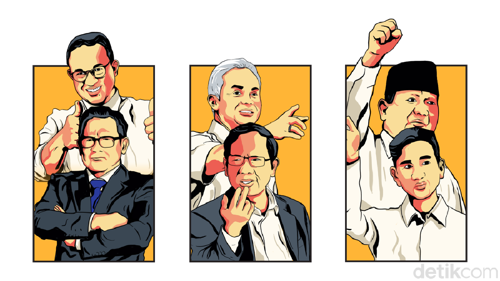

PERKENALAN
Hi,
Perkenalkan nama saya Cindy Yudi Hermawan.
Sekarang saya adalah seorang NOC Supervisor di salah satu perusahaan ISP di Kota Bandung.
Cita-cita saya adalah menjadi seorang kapiten yang mempunyai pedang panjang, kalau berjalan prok prok prok.
Terimakasih :)
- Aku
- Kamu
- Kita :)
- Aku
- Kamu
- Siapa ?

Branding Politik Capres-Cawapres 2024
Jakarta - Melihat hasil dari sejumlah lembaga survei, Prabowo-Gibran semakin tak terkejar. Sementara pasangan Anies-Cak Imin perlahan mengungguli pasangan Ganjar-Mahfud. Kemampuan dalam merancang branding politik dari masing-masing pasangan menjadi salah satu kunci dalam memenangkan pemilu, minimal dalam putaran pertama. Y